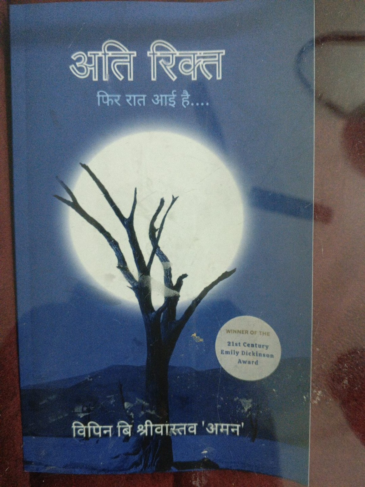

Beyond Work
Poetry, writing & cricket.

Writing & Poetry
Published poet, writing as “Aman”.
Author of the Hindi poetry collection “आति रिक्त — फिर रात आई है....”, published under the name विपिन बिहारी श्रीवास्तव ‘अमन’.
View Book on Amazon ↗Cricket & Leadership
Team FCI Prayagraj
Member of the FCI Prayagraj cricket team in the UP Region Inter-District Cricket Tournament. Captain in 2022; subsequent achievements as a team member.
2022Semi-finalist · Captain
2023Runner-up
2024Winner
2025Winner
2026Winner